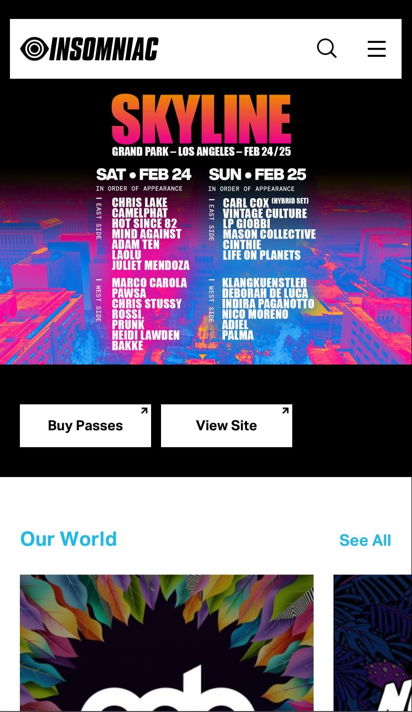
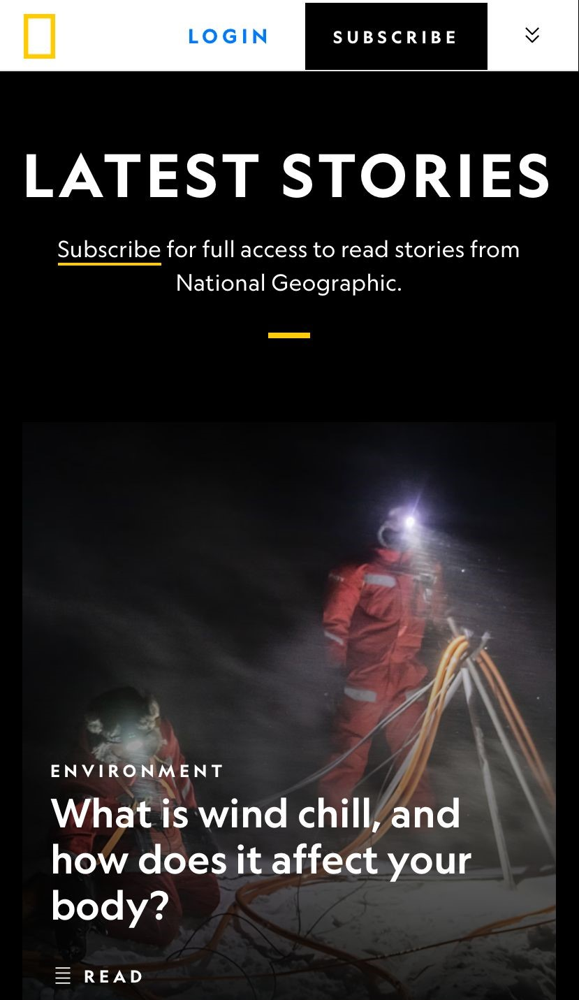

Visual Hierarchy
Insomniac
This website demonstrates the principle of Visual Hierarchy, with the most important section for users being the 'Events' section. The white background directs the eyes to focus on the colored part, which, in fact, represents the events and the 'Ticket' button.
White Space & Clean Design
Google has effectively embraced simplicity and a clean design by making efficient use of white space. Since Google is primarily used for searching, their homepage features a simple search bar, eliminating unnecessary elements. This design approach ensures that users can quickly and effortlessly perform searches without unnecessary distractions.
PARC: Contrast
National Geographic
NatGeo ensures legibility and accessibility in the user interface by strategically utilizing colors on their website. Similar to visual hierarchy principles, these colors guide users' eyes toward the elements that NatGeo wants them to focus on. This not only helps users find what they're looking for more efficiently but also contributes to creating an appealing interface.